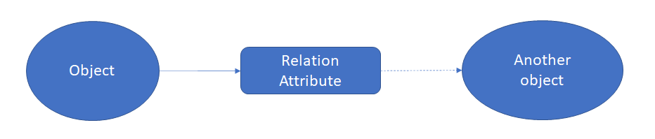
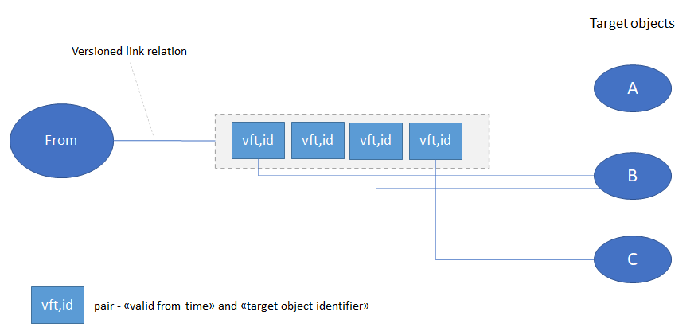
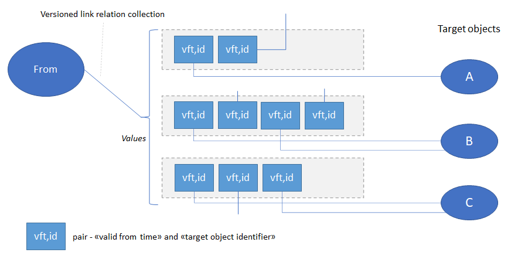
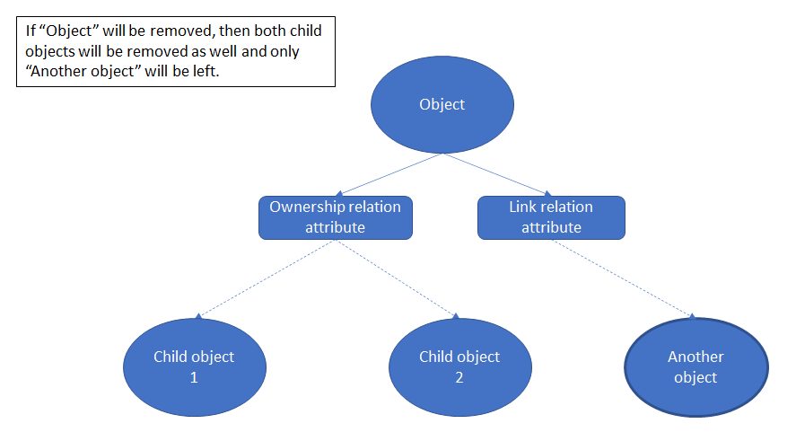

Relations¶
Objects in Mesh model can relate to each other. Relation between objects is done using relation attributes. The relation attribute defines type of the relation, target object type and other parameters.
{kind=link}
There are two groups of relations between objects in Mesh model.
Ownership relation¶
Each object is owned by some other object (owner). It is called ownership relation.
- Ownership relations can be:
one-to-one
one-to-many (collection): where value of many is in range defined by minimum and maximum cardinality on relation attribute definition level.
By convention ownership relation attribute names start with ‘has_…’, e.g.: has_PowerPlant. Removing an object will remove recursively all of its owned objects as well, if there were any.
Link relation¶
Link relation is a relation where one object may point to another object, but does not own it. There is also a versioned link relation, which is a link relation where the target object can change over time. It consists of a list of pairs:

Target object identifier.
Timestamp which indicates start of the period where the target object is active (linked to), the target object is active until the next target object in the list, if any, becomes active.
{kind=link}
- There are four types of link relation attributes:
one-to-one
one-to-many (collection)
versioned one-to-one
versioned one-to-many (collection)
Similar to ownership relation the value of many is in range defined by minimum and maximum cardinality on relation attribute definition` level.
{kind=link}
By convention link relation attribute names start with ‘to_…’, e.g.: ‘to_EnergyMarket’. Removing an object that had link relations to other objects will NOT remove the linked objects.
{kind=link}